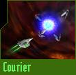
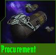

Courier missions are extraordinarily simple. Upon acceptance, a secure data disc is placed in your cargo hold. Deliver it to the destination station. Upon arrival, the docking crew will offload the disc and direct it to the receiving agency.
Should anything untoward occur to the disc during transit, such as explosive decompression of your ship's hull, your mission will be considered a failure. Such incidents, of course, garner negative attention from your superiors in your faction's military organization, which is generally not good for your career.
| Standard Transshipment Container | ||
|
|

| Procurement Missions |
|
Frequently, the optimal gear to equip a fightercraft is manufactured by another faction. Should civilian commerce prove inadequate to keep our military forces supplied, it becomes necessary to perform direct Procurement operations and purchase the needed equipment from factions with whom we have good or at least tolerable relations. Procurement missions will not be available at all times. To complete a Procurement mission, travel to a station belonging to another faction where the needed equipment is available. Generally, visiting a station that actually produces the desired gear will prove the most effective choice. Return to your destination with as much of the equipment as possible to maximize the benefit to your faction. You will be paid a per-unit bonus up to thirty (30) items procured. During a Procurement mission, any cargo specifically called for by the mission will be covered though your military insurance. |